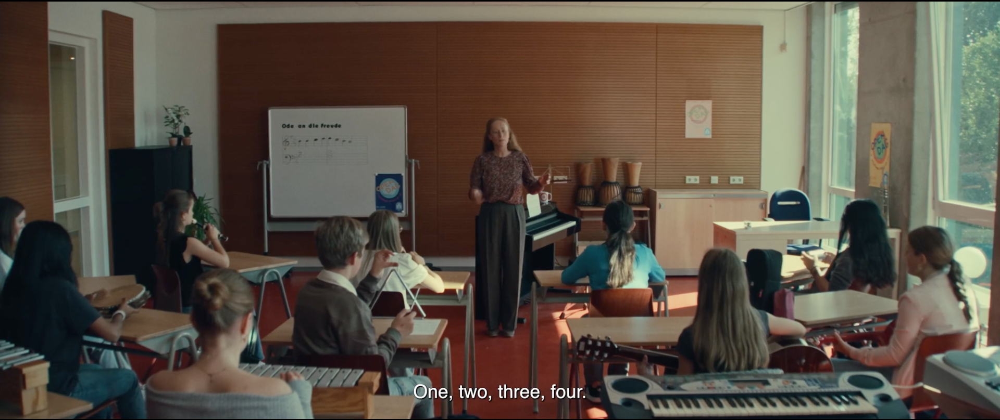
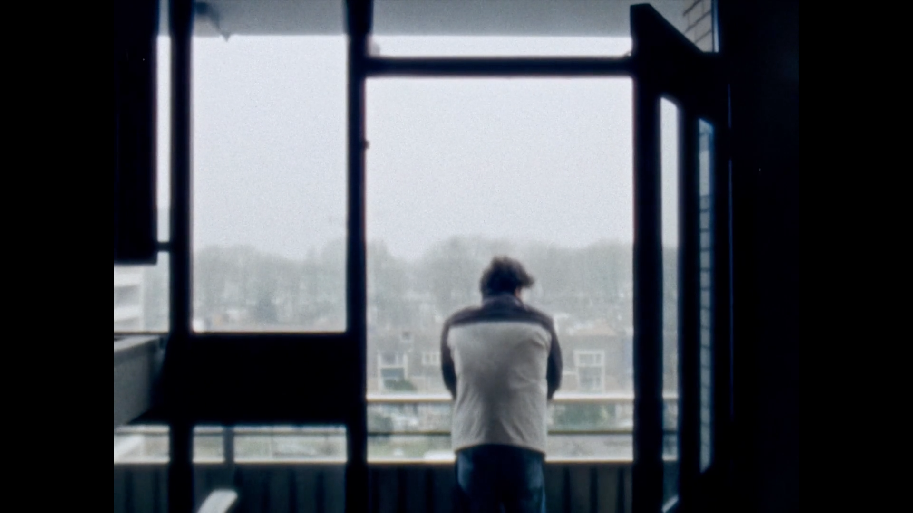
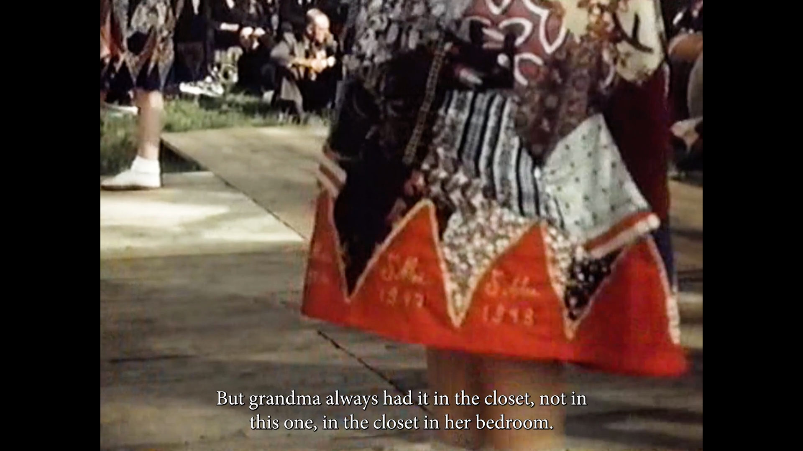
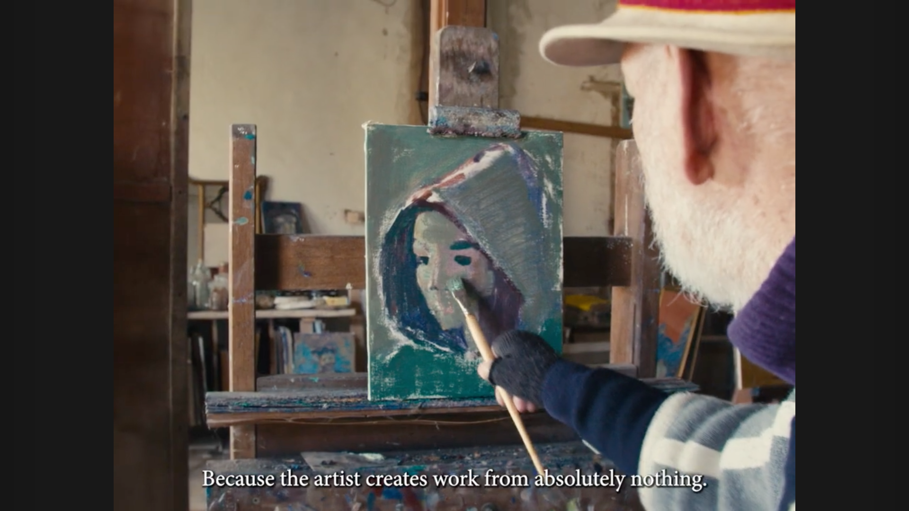
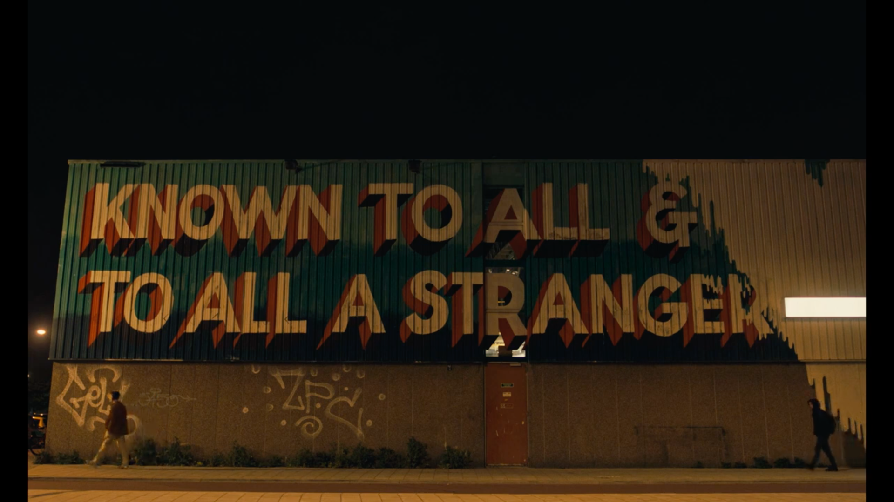

Wanklank/Crescendo
2025
Short satire fiction. 10 minutes

The way things are
2024
Audiovisual Poem shot on super 8mm

My Grandmother's Skirt
2025
Short documentary. 21 minutes

When Time Is Gone
2023
Short documentary. 10 minutes

Ventanas Abiertas
2022
Graduation short fiction. 26 minutes